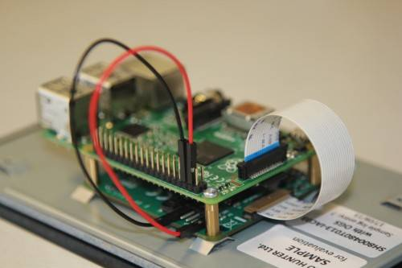
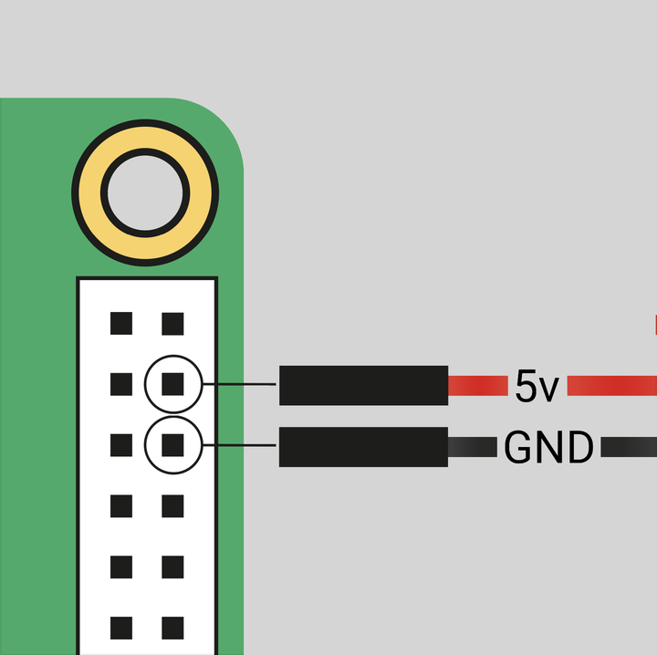
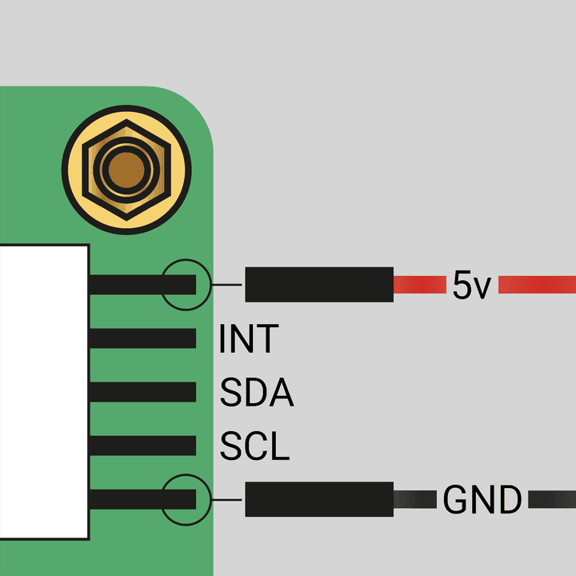

Connect the Touch Display to a board
Disconnect your from power before starting Step 1.
Step 1. Connect the FFC to the Touch Display
Prior to you start, check that you have the correct flat flexible cable for your model:
- For 5, use a 22-way to 15-way FFC.
- For all other models, use the supplied 15-way to 15-way FFC.
To connect the FFC:
- Slide the retaining clip outwards from both sides of the FFC connector on the Touch Display.
Insert the FFC into the Touch Display FFC connector, then slide the retaining clip back into place to secure the cable.
Position the metal contacts facing upwards, away from the Touch Display.
If connecting to a 5, and therefore using a 22-way to 15-way FFC, the 22-way end is the smaller end of the cable. Insert the larger end of the cable into the Touch Display FFC connector.
Step 2. (Optional) Mount the to the Touch Display
You can mount any B+ and later to the back of the Touch Display.

Figure 1. A connected to the Touch Display
To mount the device to the display:
- Align the four corner stand-offs of your with the four mounting points on the back of the Touch Display.
- Insert the M2.5 screws (included) into the four corner stand-offs and tighten until the is secure.
Step 3. Connect the FFC to the
Take care not to pinch the FFC in this step.
- Slide the retaining clip upwards from both sides of the FFC connector on the . This is labelled
DISPLAY on 4B and earlier.
Connect the other end of the FFC to the port on the , then slide the retaining clip back into place to secure the cable.
The metal contacts must face towards the Ethernet and USB-A ports.
Step 4. Connect power to the display, then power it on
Before applying power, the display must be mounted in an enclosure that ensures all parts of the circuit board are inaccessible.
We recommend utilizing your device's GPIO header to provide power to the Touch Display.
Alternatively, you can power the display directly with a separate micro USB power supply. For the full details, click here.
Connect to the GPIO header:
Connect jumper wires between the 5 V and GND pins on the device's GPIO and the 5 V and GND pins on the display.

Figure 2. The location of the headers
- Connect one end of the black jumper wire to pin six (
GND) on the .
Connect one end of the red jumper wire to pin four (5 V).
If pin six isn't available, use any other GND pin to connect the black wire.
If pin four isn't available, use the other 5 V pin (pin two) to connect the red wire.

Figure 3. The location of the display's 5 V and GND pins
- Connect the other end of the black wire to the
GND pin on the display.
- Connect the other end of the red wire to the 5V pin on the display.
- Connect your to a power source, then turn it on. The Touch Display turns on.
Connect using a micro USB supply
If you don't want to use a to provide power to the Touch Display, you can use a micro USB power supply instead. We recommend utilizing the 12.5 W power supply to make sure the display runs as advertised.
Don't connect the GPIO pins on your to the display if you choose to use micro USB for power.
- Plug in the micro USB power cable.
Power on the
- Connect your boot media to the .
Connect the to your power supply.
The Touch Display turns on when the device boots, but it can take up to one minute for OS to start displaying output on the screen.
- Compute Module
+ --
Related topic: Touch Display specifications